Inspecciones
Análisis de datos y variables
Muestros
Administración
Monitoreos
Asesoría
Moniteoreos de PRE-SIEMBRA Y SIEMBRA
- Toma de muestra del suelo
- Verificación de aislamiento
- Verificación de mapa de lote y siembra
- Elaboración de mapa de aislamiento
- Recepción de Fertilizantes
- Regulación de fertilización
- Recepción de semillas en el campo
- Inspección de sembradora
- Verificación de limpieza
- Control de carga de semillas
- Regulación de sembradora
- Densidad de siembra
- Control de ancho de pasadas
- Profundidad de siembra
- Control de calidad de siembra
- Chequeos periódicos durante la siembra
- Evaluación de logro
Moniteoreos de PRE-COSECHA - COSECHA
- Estimación de rindes
- Recuentos de pureza varietal
- Toma de muestra para determinar humedad
- Insepciión de cosechadora
- Verificación de limpieza
- Monitoreo secuencial de pérdidas
- Elaboración de informes que permiten evaluar la performance de la cosecha
- Carta de porte-remitos
- Pedido de camiones
- Inspección de camiones
Monitoreo de malezas:
- Relevamiento integral de malezas
- Trabajo específico con las problemáticas de la zona
- Determinación de estadio y porcentaje de cobertura presente en el lote
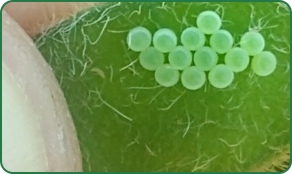
Monitoreo de enfermedades:
- Tipo severidad e incidencia
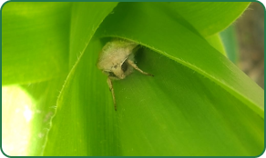
Monitoreo de plagas:
- Identificación
- Cuantificación
- Capturas de adultos (Feromonas)
- Informe de evolución
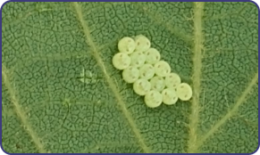
Coordinación de Aplicaciones
- Momentos óptimos de aplicaciones
- Calidad de aplicaciones
- Logística de agroquímicos
- Control de stock por campos
- Tarjeteos y verificacion de impactos
APLICACIONES DE CAMINOS DE ALAMBRADO, CANALES Y PREDIOS
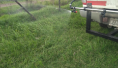
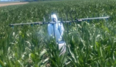
APLICACIONES SELECTIVAS, APLICACIONES EN APRCELAS Y MICROAPRCELAS
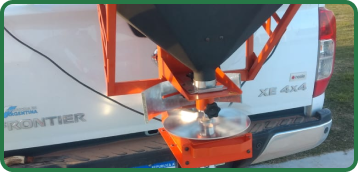
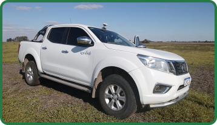
Monitoreo de plagas:
- Recorridas semanales
- Toma de mágenes geo-referenciadas e Imágenes NDVI
- Elaboración de informe por vista
- Monitoreo con geo-posicionamiento, a través de Aplicación Móvil
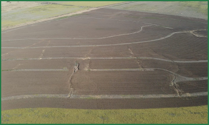
Nos encargamos del sistema productivo completo
- Manejo personal
- Logística
- Adquisición de insumos
- Manejo de instalaciones, equipos y maquinaria
- Presupuestos y cotizaciones
- Manejo de la producción y venta
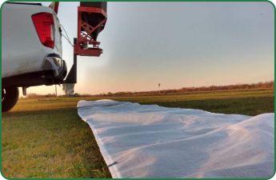
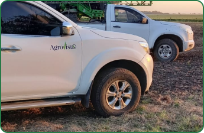
Trabajamos en todo el
país
Presupuesto ajustado a tus necesidades
'Medir para no perder'
Contactanos
-
@agrovisto
-
+54247467895
-
 info@agrovisto.com.ar
En Agrovisto nos basamos en la optimización de recursos, para lograr un
máximo beneficio productivo